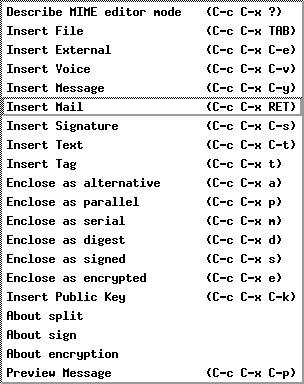
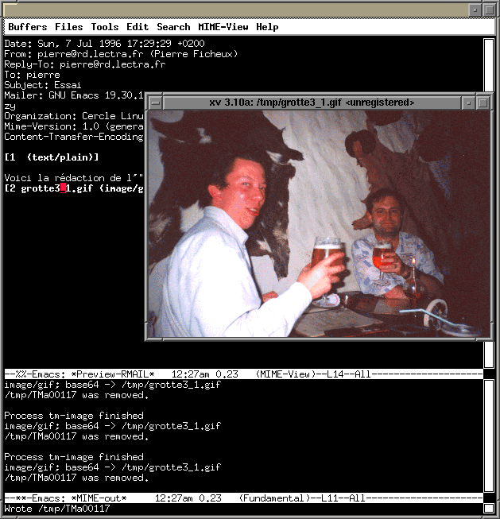

Utilisation de MIME
sous GNU-Emacs
Article pour l'Echo de Linux (Juillet 1996)
Pierre Ficheux (pierre@rd.lectra.fr)De nombreux produits commerciaux permettent de manipuler le format MIME comme par exemple Z-Mail (développé initialement par Z-Code Software, aujourd'hui distribué par NCD) ou bien le célèbre Netscape dont la version 2.0 contient un module de traitement de courrier électronique au format MIME. Le mailer Z-Mail est livré en standard sur certains systèmes comme les Silicon Graphics ou bien sur la dernière version du desktop Caldera pour LINUX.
Le célèbre gratosware ELM est également capable de manipuler des
messages MIME.
Pour manipuler du MIME avec GNU-Emacs, il est nécessaire
d'installer les packages suivants :
Le type des données du buffer de mail est indiqué par le header
Content-Type. Par exemple un mail contenant un header
Après extraction de l'archives
tm-7.43.1.tar.gz, il suffit de se positionner
dans le sous-répertoire tm et de suivre les instructions du fichier
README.en qui comme son nom l'indique est en anglais et non en
japonais, ouf :-)
L'archives téléchargeable à partir de cet article est configurée pour une version
d'Emacs supérieure ou égale à la 19.29 (la 19.30 est distribuée avec la
distribution LINUX Slackware-3.0 et s'installe sur le répertoire
/usr de l'arborescence LINUX). Ceux qui dispose d'une autre configuration
doivent éditer le fichier config.tm.
Il est tout d'abord nécessaire de compiler et d'installer quelques commandes écrites
en C par
La génération de la documentation installable sur le répertoire /usr/info
se fait par :
Pour que le package installé soit pris en compte, vous devez ajouter la ligne

Pour insérer dans votre mail un fichier binaire (une image GIF par exemple),
il suffit de sélectionner l'option Insert File (C-c C-x TAB) puis de choisir
le fichier avec Emacs. Après confirmation du type de codage utilisé (en général,
MIME utilise le codage base64), Emacs insère le fichier codé dans
votre buffer mail dans un identifieur appelé tag, comme indiqué dans
l'exemple ci-dessous :
Un option intéressante est la possibilité de "pré-visualiser" votre buffer
MIME
avant de l'expédier par l'option Preview Message (C-c C-x C-p). La méthode
de pré-visualisation est identique à celle décrite pour la
lecture d'un courrier.
Dans le cas du module Tm-7.41.1, le codage QP est positionné par défaut
pour le texte codé ISO-8859-1 (et pour d'autres codages) si l'on reste en mode
MIME. Il faut quitter le mode MIME (par C-c C-x C-z) pour
supprimer ce codage par défaut (on revient en MIME par la commande
M-x mime-mode).
La correspondance est donnée par la table suivante :
La taille des données codées est bien évidement importante par apport à un mail
texte classique. Comme de bien entendu , Emacs découpe les fichiers codés en
paquets de 50 Ko en cas de transfert par un protocole type UUCP. Si vous
désirez transférer votre courrier en un seul morceaux, vous devez le spécifier
par l'option About split du menu (et répondre No !).

qui montre la rédaction de l'Echo de Linux en pleine relaxation après le
dernier congrès de Berlin :-)
La trace de traitement du message est affichée dans le buffer *MIME-out*.
La méthode est la même si vous voulez
pré-visualiser un message MIME avant de l'expédier.
La touche e permet de sauvegarder un tag dans le fichier correspondant
(sous /tmp) comme le montre la trace du buffer *MIME-out* :
Manipuler le mail avec GNU-Emacs
GNU-Emacs, éditeur bien connu des utilisateurs de freeware, fournit un
module de manipulation de mail relativement agréable à utiliser. La composition
d'un courrier se fait dans un buffer Emacs grace à la commande
C-x m (correspondant à la séquence M-x mail). La version de base
de la distribution GNU-Emacs ne permet malheureusement pas de manipuler
autre chose que du texte.
que vous pouvez télécharger en cliquant sur les références ci-dessus.
Fonctionnement et installation de METAMAIL
Principe de base
Metamail a été initialement écrit par
Nathaniel S. Borenstein.
Le programme metamail utilise un fichier mailcap (généralement
localisé sur le répertoire /usr/local/etc) indiquant le programme
auxiliaire à utiliser pour visualiser un mail reçu dans un format donné.
Content-Type: audio/au
indique la présence d'un fichier audio au format AU (utilisé en
particulié sur les stations SUN ou sur LINUX). Le fichier mailcap indique
par la ligne
audio/au; showaudio %s
qu'un fichier de ce type sera exploité par la commande showaudio qui sur
mon PC Linux se réduit à un shell-script très simple
root@pcpf # cat /usr/bin/showaudio
#!/bin/sh
cat $1 > /dev/audio
Installation
La génération du package Metamail sur PC LINUX est extrèmement simple. Un
simple
#define LINUX
dans le fichier config.h indique au Makefile la configuration pour LINUX. Le
reste se reduit à make puis make install-all qui installe les
binaires et les pages manuels.
Installation de TM
Le package Tm-7.43.1 est développé par
MORIOKA Tomohiko et
KOBAYASHI Shuhei
et se compose principalement de fichiers Lisp Emacs (.el) destinés à la
manipulation de mail au format MIME. La documentation en anglais et en
japonais sous forme de fichiers .texi est également fournie.
make all
puis
make install
La génération et l'installation des fichier Lisp se fait ensuite par
make install-19_29
L'archive est configurée de manière à ce que les fichiers .el et
.elc (Lisp compilé) soient installés sur /usr/lib/emacs/site-lisp.
cd doc
make info
(load "mime-setup")
dans votre fichier $HOME/.emacs.
Composition et lecture de message MIME sous Emacs
Composition d'un message MIME
L'ouverture d'un buffer de composition de mail par C-x m doit faire
apparaitre un nouveau menu intitulé MIME-Edit qui propose les options
de manipulation d'un buffer MIME
From: pierre@rd.lectra.fr (Pierre Ficheux)
Reply-To: pierre@rd.lectra.fr
To: truc@machin.fr
Subject: Test MIME Emacs
Mailer: GNU Emacs 19.30.1 (i486-slackware-linux, X toolkit) of Wed Nov 29 1995 on fuzzy
Organization: Cercle Linuxien pessacais : 4 avenue Mozart, Pessac, France
--text follows this line--
Ici j'insère une image du super programme MODARIS de Lectra-Systèmes :)
--[[image/gif
Content-Disposition: inline; filename="modaris.gif"][base64]]...
Vous pouvez également insérer un enregistrement direct par Insert Voice
(C-c C-x v). Cet enregistrement utilise le device /dev/audio utilisé
fréquemment sur station SUN mais également disponible sous LINUX. Une fois
l'enregistrement terminé (par C-g) les données codées sont intégrées dans
le buffer *mail* :
From: pierre@rd.lectra.fr (Pierre Ficheux)
Reply-To: pierre@rd.lectra.fr
To: truc@machin.fr
Subject: Test MIME Emacs
Mailer: GNU Emacs 19.30.1 (i486-slackware-linux, X toolkit) of Wed Nov 29 1995 on fuzzy
Organization: Cercle Linuxien pessacais : 4 avenue Mozart, Pessac, France
--text follows this line--
Ici j'insère un enregistrement
--[[audio/basic][base64]]
Quelques considérations sur le Quoted-Printable
Lorsque le module MIME est chargé par (load "mime-setup"),
le codage par défaut du mail est le quoted-printable (ou QP),
un codage très populaire dans certains logiciels commerciaux ou nom (Eudora,
Netscape, ...)
dont la particularité est de rendre très difficile à lire le message reçu dans le
cas ou l'on ne dispose pas d'un mailer capable de décoder le QP. L'exemple suivant,
dont les lectrices féminimes voudront bien pardonner le coté paillard (mais c'est
pour la bonne cause), met en évidence le problème. Le message suivant :
Date: Sun, 7 Jul 1996 23:48:23 +0200
From: pierre@rd.lectra.fr (Pierre Ficheux)
Reply-To: pierre@rd.lectra.fr
To: pierre
Subject: Test QP
Mailer: GNU Emacs 19.30.1 (i486-slackware-linux, X toolkit) of Wed Nov 29 1995 on fuzzy
Organization: Cercle Linuxien pessacais : 4 avenue Mozart, Pessac, France
Mime-Version: 1.0 (generated by tm-edit 7.43)
Content-Type: text/plain; charset=ISO-8859-1
Content-Transfer-Encoding: quoted-printable
L'=E9t=E9, y'a des t=E9t=E9s =E0 admirer
est illisible. Par contre la même chose en pur ISO-8859-1 :
Date: Sun, 7 Jul 1996 23:50:47 +0200
From: pierre@rd.lectra.fr (Pierre Ficheux)
Reply-To: pierre@rd.lectra.fr
To: pierre
Subject: Test QP2
Mailer: GNU Emacs 19.30.1 (i486-slackware-linux, X toolkit) of Wed Nov 29 1995 on fuzzy
Organization: Cercle Linuxien pessacais : 4 avenue Mozart, Pessac, France
Mime-Version: 1.0 (generated by tm-edit 7.43)
Content-Type: text/plain; charset=ISO-8859-1
L'été, y'a des tétés à admirer
est beaucoup plus sympathique.
(defvar mime/charset-type-list
'(("US-ASCII" 7 nil)
("ISO-8859-1" 8 "quoted-printable")
("ISO-8859-2" 8 "quoted-printable")
("ISO-8859-3" 8 "quoted-printable")
("ISO-8859-4" 8 "quoted-printable")
("ISO-8859-5" 8 "quoted-printable")
("KOI8-R" 8 "quoted-printable")
("ISO-8859-7" 8 "quoted-printable")
("ISO-8859-8" 8 "quoted-printable")
("ISO-8859-9" 8 "quoted-printable")
("ISO-2022-JP" 7 "base64")
("ISO-2022-KR" 7 "base64")
("EUC-KR" 8 "base64")
("ISO-2022-JP-2" 7 "base64")
("ISO-2022-INT-1" 7 "base64")
))
Pour supprimer le QP pour un ou plusieurs des codages, il suffit de re-définir cette
table dans votre fichier .emacs en remplaçant "quoted-printable"
par nil.
("ISO-8859-1" 8 nil)
Notez que certains produits commerciaux (Netscape pour ne citer que lui
ne supporte pas les mail découpés :( )
Lecture d'un message MIME
Lorsqu'un message est affiché dans le buffer RMAIL (obtenu par
M-x rmail ou bien l'option Read Mail du menu Emacs/Tools), on
peut visualiser les tags MIME par l'appui sur la touche v
(M-x mime/viewer-mode) dans le buffer RMAIL. On obtient alors un buffer
*Preview-RMAIL* de la forme suivante :
Date: Sun, 7 Jul 1996 17:29:29 +0200
From: pierre@rd.lectra.fr (Pierre Ficheux)
Reply-To: pierre@rd.lectra.fr
To: pierre
Subject: Essai
Mailer: GNU Emacs 19.30.1 (i486-slackware-linux, X toolkit) of Wed Nov 29 1995 on fuzzy
Organization: Cercle Linuxien pessacais : 4 avenue Mozart, Pessac, France
Mime-Version: 1.0 (generated by tm-edit 7.43)
Content-Transfer-Encoding: 7bit
[1 (text/plain)]
Voici la rédaction de l'"Echo de Linux"
[2 grotte3_1.gif (image/gif)]
Le buffer contient ici 2 tags (un texte déja visible et un image GIF). On peut
visualiser la partie image en positionnant la souris (ou le curseur) sur le tag
numéro 2 et en tapant de nouveau la touche v (ou bien en cliquant avec
le bouton
central de la souris). On obtient alors le résultat suivant :
image/gif; base64 -> /tmp/grotte3_1.gif
/tmp/TMa00117 was removed.
extract to /tmp/grotte3_1.gif
Process tm-image finished
L'action sur la touche q supprime le buffer *Preview-RMAIL* et
revient au buffer RMAIL normal.
Conclusion
Ce package permet de transformer Emacs en un excellent utilitaire de manipulation
de message MIME. Pour une description complète des commandes et des
possibilités du package, je vous conseille vivement d'installer la documentation
en ligne au format info. Je tiens à remercier chaleureusement
Jean-Michel Soenen de Lectra-Systèmes
pour la découverte de ce package très intéressant sans lequel bien entendu, cet
article n'aurait jamais vu le jour.